Unofficial - F5 Certification Exam Prep Material > Symposium 2026 - BIG-IP Administrator: Source | Edit on
Lab 7: Common Configuration Items
Resource Utilization and Provisioned Modules
- On bigip01
- Go to System > Resource Provisioning
- On this page, you can view the provisioned modules and their license status based on your BIG-IP license.

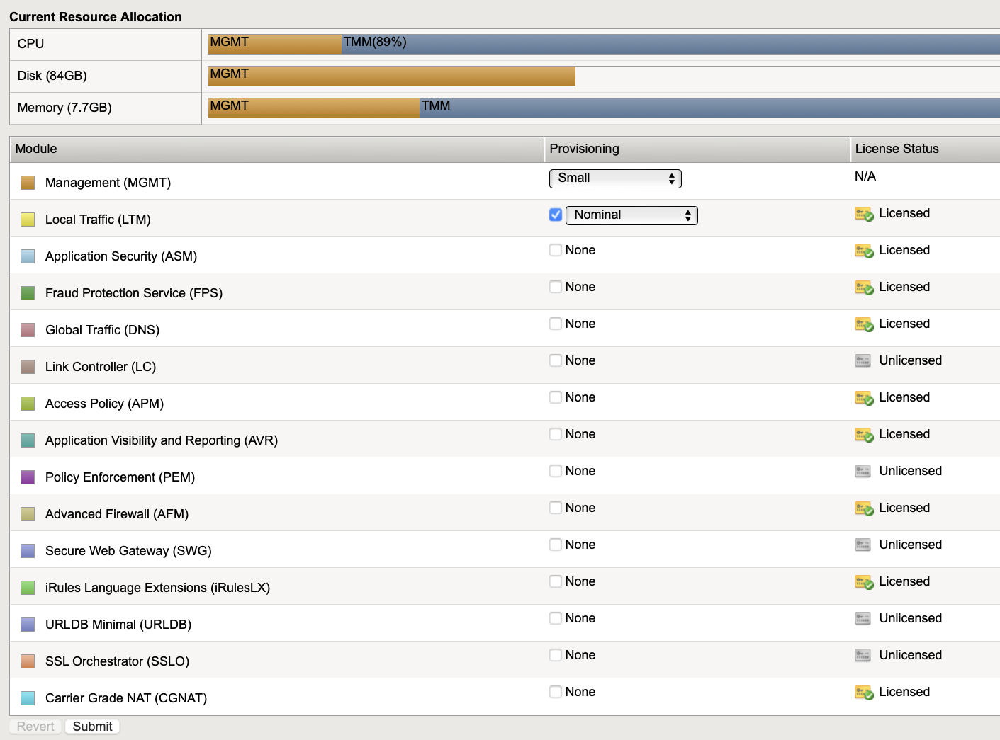
Creating User on BIG-IP
- On bigip01
- Go to System > Users
- Click Create

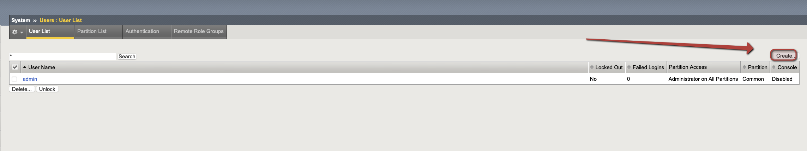
- Fill out information for Username and Password
- For Role, please select Administrator

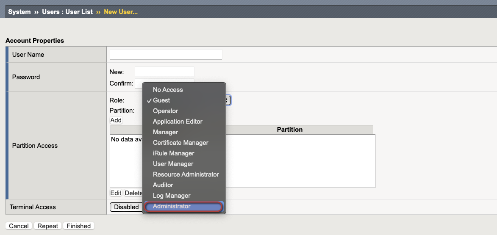
- Add user to partition, give user TMSH access for Terminal Access and select Finished

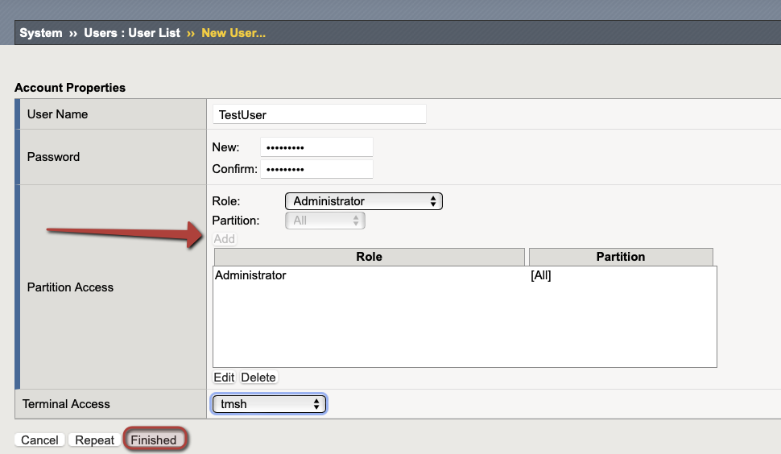
- Log out of the F5 at the top right and log back in with the new credentials you created

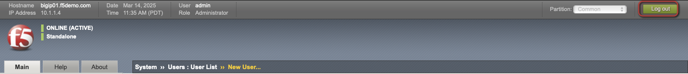
Execute a UCS Backup and UCS Restore
- System > Archives

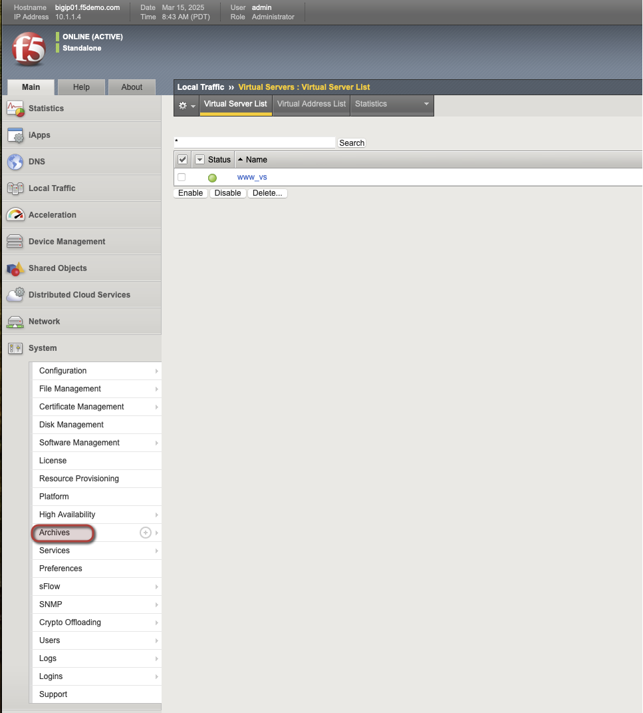
- Select Create, to create a UCS backup

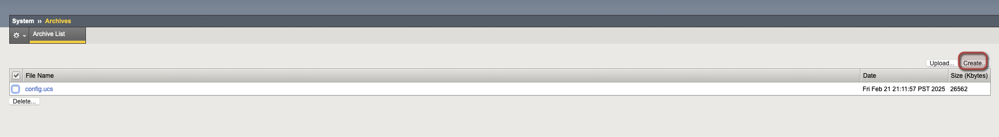
- Select Finished when ready to complete the UCS Backup

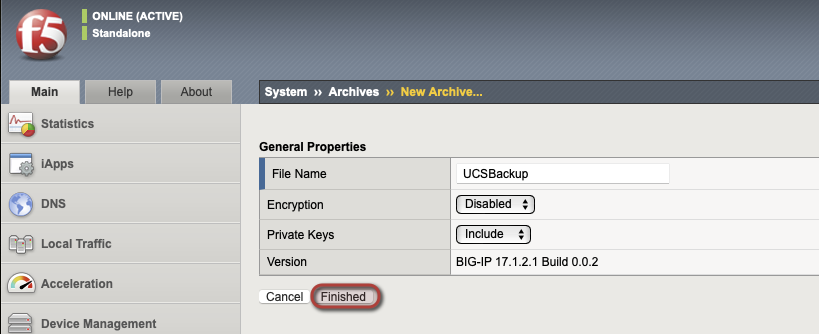
- Go to Local Traffic > Virtual Servers and delete www_vs

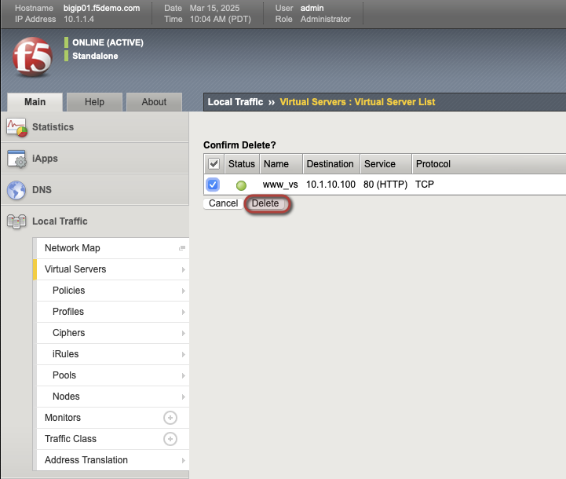
- Next go to System > Archives and click on UCSBackup.UCS

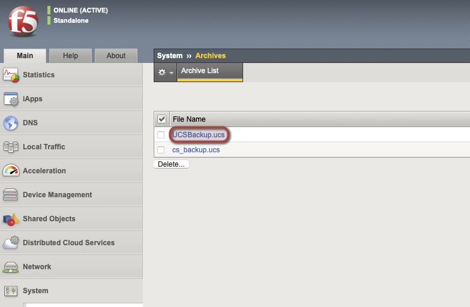
- Select Restore and restore the UCS backup

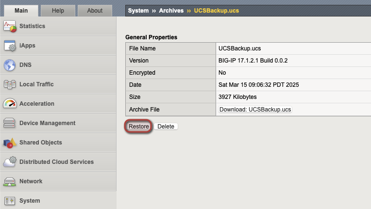
- Go back to Local Traffic > Virtual Servers and ensure that www_vs was restored from the UCS Backup

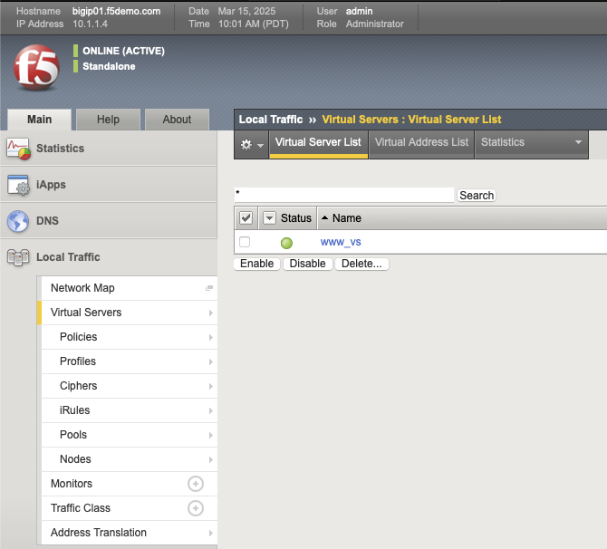
Managing Software Images on the BIG-IP System
In this section of the lab we will explore methods for managing software images on the BIG-IP.
Before starting, ensure you have located and downloaded the software image, point release, or hotfix and corresponding image verification file(s) from the F5 Downloads site.
Upload using the configuration utility
- On bigip01 log into the configuration utility.
- Go to System > Software Management
- Select Import

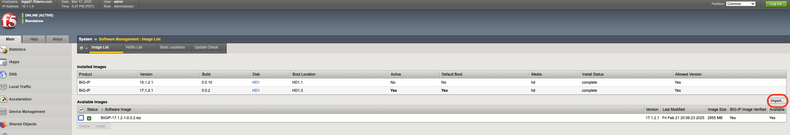
Select Choose File and choose the software image, point release, or hotfix, and the corresponding MD5 file to import.
For the purpose of the lab, you do NOT need to import the image as it’s already there, but when doing an upgrade you would Select Import
Log into a bash session on the BIG-IP.
Change directories to the /shared/images directory by typing the following command:
cd /shared/imagesVerify the software image file integrity using either the MD5 checksum, SIG, or PEM files. For this lab we will use the MD5 checksum.
[root@bigip01:Active:Standalone] images # md5sum --check BIGIP-17.5.1.5-0.0.6.iso.md5 BIGIP-17.5.1.5-0.0.6.iso: OK [root@bigip01:Active:Standalone] images #
Upload using SCP from the command line
- Secure copy (SCP) the .iso file and corresponding .md5 file from BIG-IP-01 to the /shared/images directory on the BIG-IP 02 device.
Examples:
scp /shared/images/BIGIP-17.5.1.5-0.0.6.iso root@10.1.1.5:/shared/images/
scp /shared/images/BIGIP-17.5.1.5-0.0.6.iso.md5 root@10.1.1.5:/shared/images/
Use the same password to transfer the file to the 02 device
Log into the BIG-IP web shell and type bash in the command line session on the BIG-IP.
Change directories to the /shared/images directory by typing the following command:
cd /shared/imagesVerify the software image file integrity using either the MD5 checksum, SIG, or PEM files. For this lab we will use the MD5 checksum.
[root@bigip01:Active:Standalone] images # md5sum --check BIGIP-17.5.1.5-0.0.6.iso.md5 BIGIP-17.5.1.5-0.0.6.iso: OK [root@bigip01:Active:Standalone] images #
Show currently configured boot location
- On bigip01: log into the configuration utility.
- Go to System > Software Management > Boot Locations
This screen will show the current configured boot locations. The Status column will show which is active:

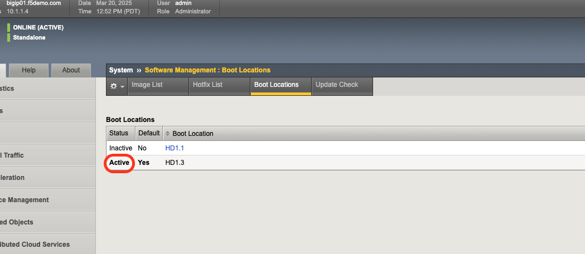
Creating a new volume for software images
After the software image has been uploaded and verified, you can install it to a boot location.
Using the Configuration Utility
- On bigip01 log into the configuration utility.
- Go to System > Software Management
- For Available Images, select the box next to the software you want to install.
- Select Install

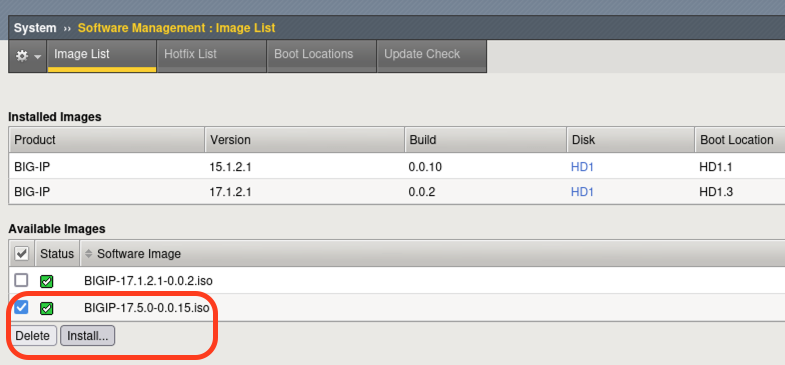
- In the Install Software Image pop-up window, for Volume set name, select a volume set or type the name of the new volume set.
For example, if you type 2 for the volume set name, the BIG-IP system creates a new volume set at boot location HD1.2.

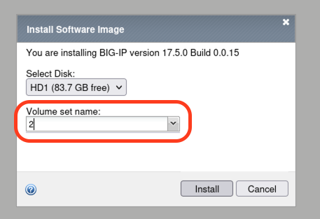
- For this lab, no need to complete the software upgrade, but when running through a software install you would select Install
- You can monitor the installation status in the Installed Images section of the System > Software Management page.
Using tmsh
Log into tmsh by issuing the following command:
tmshTo install a software image, point release, or software fix, use the following command syntax:
install /sys software <hotfix | image> <software>.iso volume <volume_number>Note
You can use tab completion in tmsh. To see the available images for installation, press the Tab key after you type the install sys software image command.
In our lab, we will use the example below: When installing a BIG-IP image, below is the syntax you would use. For the purpose of the lab, DO NOT INSTALL IMAGE SOFTWARE!
install /sys software image BIGIP-17.5.0-0.0.X.iso volume HD1.2 create-volumeTo verify the software installation progress, type the following command:
show sys softwareThe command output appears similar to the following example:
root@(bigip02)(cfg-sync Standalone)(Active)(/Common)(tmos)# show sys software ------------------------------------------------------------------- Sys::Software Status Volume Product Version Build Active Status Allowed Version ------------------------------------------------------------------- HD1.1 BIG-IP 17.5.1.5 0.0.6 yes complete yes HD1.3 BIG-IP 17.1.2.1 0.0.2 no complete yes
Sys::Software Update Check
Check Enabled true Phonehome Enabled true Frequency weekly Status none Errors 0
Determine Resource Utilization
In this portion of the lab, we will be viewing different system-level statistics.
Note
The Application Visibility and Reporting module has been provisoned and is required to veiw some of the system analytical charts here.
Identify CPU Statistics per Virtual Server
Using the Configuration Utility
- On bigip01 log into the configuration utility.
- Go to Statistics > Module Statistics > Local Traffic.

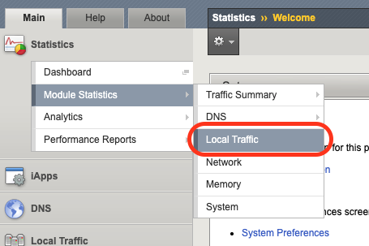
- Click the Statistics Type dropdown and select Virtual Servers.

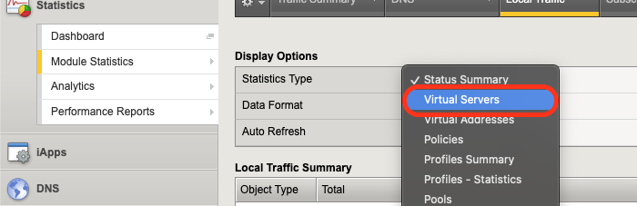
- From this screen, you can view CPU utilization for each Virtual Server.

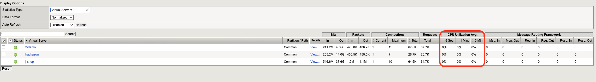
Using tmsh
Log into tmsh by issuing the following command:
tmshThe below is an example tmsh command that shows filtered output yielding CPU statistics for each virtual server.
show /ltm virtual | grep -e "Ltm::" -e "Last 5 Min"Below is example output for this command:
root@(bigip01)(cfg-sync Standalone)(Active)(/Common)(tmos)# show /ltm virtual | grep -e "Ltm::" -e "Last 5 Min" Ltm::Virtual Server: f5demo Last 5 Minutes 0 Ltm::Virtual Server: hackazon Last 5 Minutes 0 Ltm::Virtual Server: j-shop Last 5 Minutes 0
Interpret Statistics for Interfaces
Using the Configuration Utility
- On bigip01 log into the configuration utility.
- Go to Statistics > Module Statistics > Network.

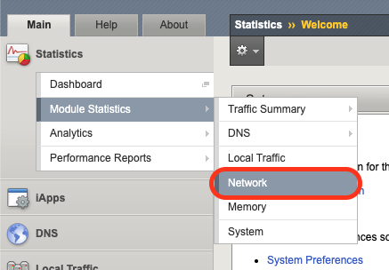
- Ensure the statistics type is set to Interfaces. From this screen, you can view statistics for each interface on the BIG-IP.

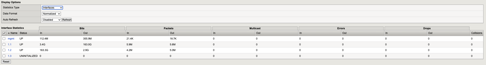
Using tmsh
Log into tmsh by issuing the following command:
tmshIssues the following command to view statistics for each interface on the BIG-IP.
show net interfaceBelow is example output for this command:
root@(bigip01)(cfg-sync Standalone)(Active)(/Common)(tmos)# show net interface ------------------------------------------------------------------ Net::Interface Name Status Bits Bits Pkts Pkts Drops Errs Media In Out In Out ------------------------------------------------------------------ 1.1 up 3.5G 167.1G 6.1M 5.8M 0 0 10000T-FD 1.2 up 167.5G 3.0G 4.3M 5.2M 0 0 10000T-FD 1.3 uninit 0 0 0 0 0 0 none mgmt up 113.5M 360.5M 22.0K 19.3K 0 0 100TX-FD
Determine Disk and Memory Utilization
Viewing Memory Statistics
- On bigip01 log into the configuration utility.
- Go to Statistics > Analytics > Memory.
The Memory TMM statistics chart opens showing the average total RAM used per slot over a period of time.

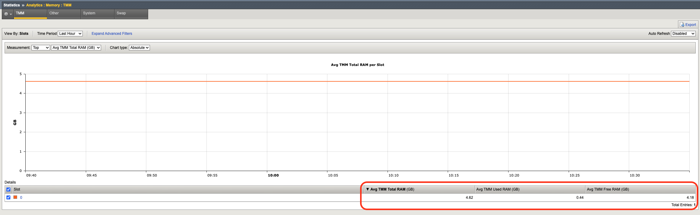
In addition, the tabs at the top of this screen can be used to show additional memory utilization.
- For other usage, such as management, click Other.
- For operating system usage, click System.
- To see how much swap is being used, click Swap.

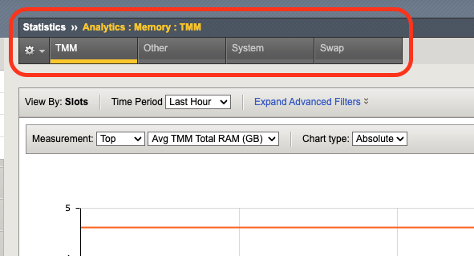
Viewing Disk Activity
- On bigip01 log into the configuration utility.
- Go to Statistics > Analytics > Disk.
The Disk Activity chart opens showing Total I/O per slot over a period of time.

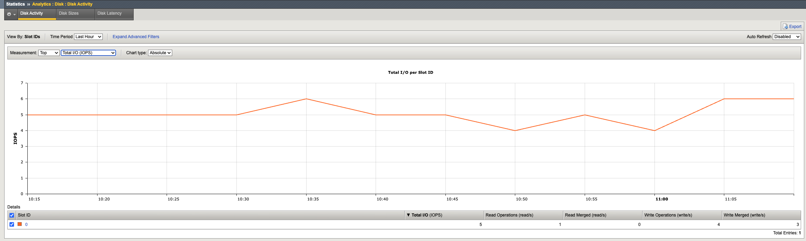
- Using the Measurement dropdown, we can view additional disk activity metrics.

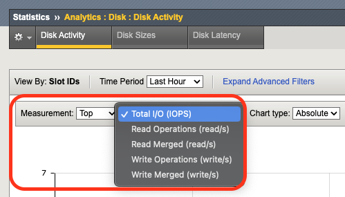
In addition, the tabs at the top of this screen can be used to show disk activity metrics.
- To see read or write bytes over time, click Disk Sizes.
- To see disk read latency, click Disk Latency.

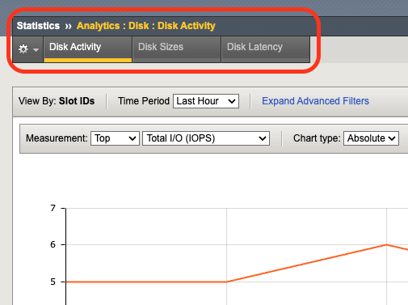